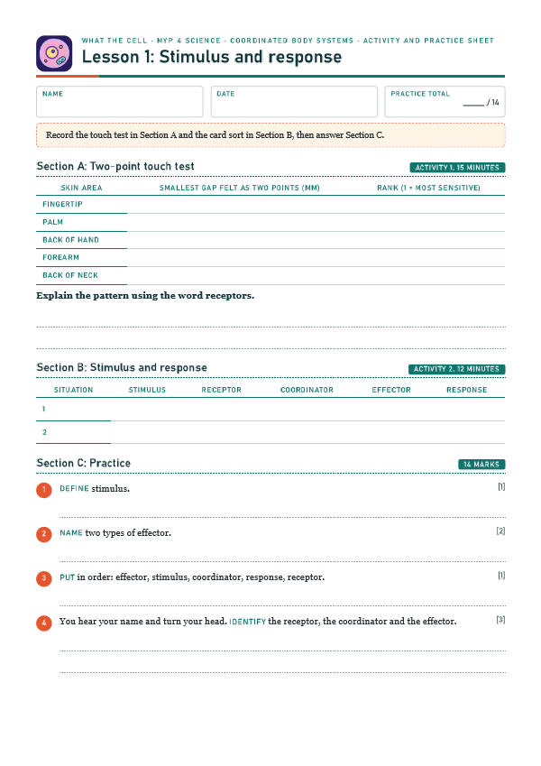

By the end of the lesson you can
- Define stimulus, receptor, effector and response
- Describe the path from stimulus to response
- Compare nervous and hormonal coordination
- Investigate how sensitive different parts of the skin are
Keys: arrows or a presentation clicker move the slides, F for full screen. Slides with a red dot have a video or simulation.
Videos (all 5 minutes or less)
- 2:39
Receptors and effectors
Launchpad Learning. While you watch: What do receptors do? Slide 9.
Simulations
- Lab
Print and practise

Activity and practice sheet
Used in the lesson’s activities, with practice questions. Your teacher has the answers.
Download (PDF)Lesson 1 slides
All 15 slides in one file, to read again or print. The video buttons on the slides open YouTube.
Download the slides (PDF)Revising? The Revision tab on the unit page has the unit notes and review.
Class activity pack
Everything to print for the lesson’s activities: picture cards, sorting mats, station cards with their kit lists, and the teacher’s set-up notes. Print it before class.
Download the activity pack (PDF)Notes: Stimulus and response
stimulus
A change in the surroundings that an organism can detect. For example: a ball flying towards you.
receptor
A cell or organ that detects a stimulus. For example: touch receptors in the skin.
coordinator
The part that decides what to do: brain, spinal cord or a gland. For example: the brain.
effector
A muscle or gland that carries out the response. For example: arm muscles.
response
The action that follows a stimulus. For example: diving to catch.
sense organ
An organ full of receptors. For example: eye, ear, skin, tongue, nose.
Key words
| stimulus | a detectable change |
|---|---|
| receptor | detects a stimulus |
| coordinator | brain, spinal cord or gland |
| effector | muscle or gland |
| response | the action that follows |